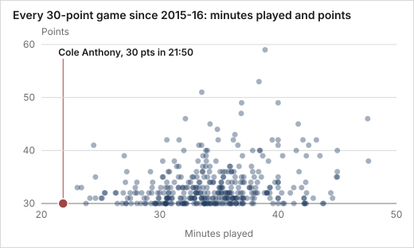

Subject: Melbourne United 95–97 Adelaide 36ers: 2 of 2 pre-game storylines contradicted
From: Storyline DeskTo: Leadership, Media, Producers, Broadcast, Partnerships manager · internal onlySat 9:29 pm · 3 min after the final whistle
Adelaide won the season opener at Melbourne 97-95. They made 13 threes to Melbourne's 7, an 18-point edge from deep. Bryce Cotton scored 29. Cole Anthony scored 30 in under 22 minutes, the fewest minutes for a 30-point game in records back to 2015-16. That story is on hold until his reported minutes limit is confirmed. Fan claims of a Melbourne home whistle aren't backed by fourth-quarter free throws.
What moved since this afternoon
Does Bryce Cotton score less against Melbourne United than usual?![Does Bryce Cotton score less against Melbourne United than usual?]()
Result: 29 points against a test line of 25. Contradicted.
contradictsBryce Cotton has averaged 21.21 points in 39 games against Melbourne United in the dataset since 2015-16, lower than his 25.3 points per game for Adelaide in 2025-26. Most of those games came during his Perth years, and in three games against Melbourne as an Adelaide player he scored 33, 22 and 17.
Stored test result.
Will Chris Goulding make more three-pointers alongside Cole Anthony?![Will Chris Goulding make more three-pointers alongside Cole Anthony?]()
Result: 1 three-pointers made against a test line of 2. Contradicted.
contradictsIn 2025-26 Chris Goulding made 2.3 three-point shots per game, 69 of 225 attempts (30.7%) across 30 games. That season is the baseline for the idea that Cole Anthony will create easier shots for him, although one game is a noisy test.
Stored test result.
The desk's top pick
Did Cole Anthony score 30 points in fewer minutes than anyone on record (since at least 2015-16)? sensitive · injuryCole Anthony scored 30 points in 21 minutes 50 seconds, the fewest minutes for a 30-point game in box-score records with minutes going back to at least 2015-16. The next fastest is Jo Lual-Acuil Jr's 33 points in 23:02. The reported minutes restriction after a calf injury comes from commentary and is not verified in the data.
Ranked first because it suits the most teams: producers, social, broadcast and leadership. It's a suggestion, not the only story. 9 more stories are on the board.
![Did Cole Anthony score 30 points in fewer minutes than anyone on record (since at least 2015-16)?]()

League CEO: push · “Lead the call with this once the minutes limit is confirmed.” simulated
Broadcast producer: push simulated
Sensitive stories: set a stance
Did the broadcast frame the night as Cotton against Anthony? sensitive · injuryDuring the game, commentators presented it as a duel between Adelaide's Bryce Cotton and Melbourne's Cole Anthony. They contrasted Cotton's nearly 35 minutes on court with Anthony's 19, and said Anthony had not looked restricted. Those minutes are the commentators' figures and have not been checked against the box score, and the remark about a minutes restriction is theirs, not a team statement.
Attributed to the broadcast commentary; not checked against the stats.
Did officiating frustration run through Adelaide's two-point finish? sensitive · officiatingIn the closing minutes, Melbourne's Joshua Oduro fouled out. Commentators said there was contact on his shot and noted Luke Travers' frustration with a Chris Reed call, and Adelaide held on 97-95 after late misses by Cole Anthony and Golding. These are the commentators' opinions on the officiating, not a verified review of the calls.
Attributed to the broadcast commentary; not checked against the stats.
What was the YouTube live chat talking about as the game went on? sensitive · fan quotesThe live chat was heavily Filipino-language and moved from betting talk early on to scattered referee complaints mid-game. The loudest stretch was a burst of referee abuse in about 80 seconds late in the game, followed by a Cotton-versus-Anthony debate and Cotton chants. Betting shaped much of the chat's tone, so it is not a clean read of general fan opinion, and the fan opinions are unverified.
Based on fan comments; not a stats check.
What did the pre-game coverage say this opener would test? sensitive · injuryBefore the Round 1 opener, NBL.com.au framed Melbourne v Adelaide as a test of whether Cole Anthony is an MVP candidate against Bryce Cotton, whom Chris Anstey called the barometer and expected to have a big game. Anthony was coming back from a calf complaint that kept him out of the Blitz and limited his pre-season, and he said he would be ready.
Attributed to media reports; not checked against the stats.
+ 3 more on the board
Questions worth asking next
Reply with a number, change one, or ask your own.
- Since 2015-16, how many 30-point games came in under 25 minutes played?
- Projection only: at tonight's rate of points per minute, what would Anthony score over 30 or 36 minutes, and how does that compare with the box-score single-game highs since 2015-16?
- Since 2015-16, how many players reached 30 points in their first box-score appearance for a club?
Reply to steer what happens next
Ask for anything, for example, or set a stance.
simulated The reply thread records the next question.